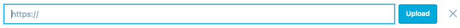
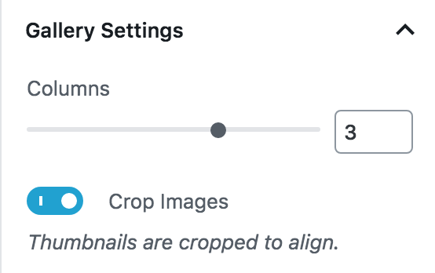
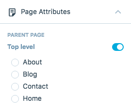
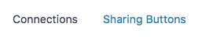

Wordpress 1
Building Websites with Wordpress
Introduction
Originally a designed as a blogging platform, Wordpress is now a full-featured Web Content Management System
(CMS). Popular among users ranging from individual bloggers to Fortune 500 companies, Wordpress is a free
software tool that can be used to create and manage basic websites with little or no coding knowledge. Since
Wordpress is Open Source, users with HTML, CSS and PHP coding knowledge can create highly complex,
customized websites by editing the underlying code.
About this Class
This manual provides a basic introduction to the Wordpress interface and explores commonly user features by
guiding students through the creation of a simple website.
During this class, students will:
-
Become familiar with the Wordpress.com administration environment
-
Gain experience adding content, such as text, photos, and video to a Wordpress site
-
Gain experience configuring the layout of a Wordpress site
Prerequisites
Basic computer operation skills (mouse, keyboard, file management)
Other Requirements
Creating an Account
Before we can build a WordPress site, we first need to create a Wordpress.com account. In this section, we’ll
sign up for and activate a new WordPress account.
Registering Your Account
-
Open a web browser, such as Firefox, Chrome, or Internet Explorer and Navigate to http://wordpress.com/
-
Click the "Start Your Website" button near the center of the screen
-
Follow the provided instructions to complete the sign-up process. Choosing options that describe your
desired site helps WordPress to suggest themes and designs that make sense for your project.
You are free to choose whatever suits your project, but some instructions
will be specific to the theme we are using in this manual. In this manual we will choose
"Family, Home, & Lifestyle", then "Travel", then "A welcome page for my site", then the "Motif" theme.
-
Choose a domain. You can choose a custom domain (included in WordPress Premium), or a free
".wordpress.com" address.
If you’re unsure what to choose for your Blog Address, just use your name (lower case, no spaces -
i.e. buckybadger) for now. You can always change it later. See http://
en.support.wordpress.com/changing-blog-address/ for instructions.
-
Choose a plan for your account. The free plan perfectly fine for now, but you can always upgrade
later if you choose.
-
Create your account by giving your email address. Be sure to use a real email address! You’ll need to
check your email in order to activate your account.
-
Check your email for a confirmation message and click the link in it to confirm your account.
If You Already Have a WordPress Account
-
Open a web browser, such as Firefox, Chrome, or Internet Explorer and Navigate to http://wordpress.com/
-
Log in to your account
-
Click the My Sites tab at the top of the screen
-
Click "Add New Site"
-
Follow the same instructions as above to create a new site by selecting a theme and domain.
Interface
The Navigation Bar
Appearing on the left side of your page when you click "My Site", the Navigation Bar is your primary control
point for managing your site. It has options to quickly add things like blog posts and pages, as well as
edit your site theme and settings.
Navigating between your Blog and Dashboard
Clicking the name of your site at the top of the Navigation Bar will bring up a quick preview of your site,
with options to view it as it would look on a computer, tablet, or phone. If you would like to actually open
your site you can right-click and choose "Open Link in New Tab".
Stats
If you are interested in how many visits your site gets and want to gain some insight into which posts and
pages are most popular, visit your Stats page! Your stats page includes graphs, charts, and lists that
provide viewer traffic details.
The following are not reflected in your stats:
-
Visits to uploaded documents and files
-
Visits from browsers that do not execute JavaScript or load images
-
GoogleBot and other search engine spiders
-
Your own visits to your blog (for logged-in users of public blogs only)
Insights
The Insights tab shows information about your posting activity, such as when and how frequently you post. It
also displays information about your most recent post, as well as the number of Views, Visitors, Likes, and
Comments you've received on your site.
This information can also be broken down into specific days, weeks, months, and years by clicking the
corresponding tabs. This may be useful for finding correlations between the popularity of your posts and the
date and time they were posted, among other factors.
Publish
In this section we will discuss the various ways and types of content to add to your site.
Blog Posts
Wordpress allows you to add two types of content to your site: Pages and Posts. Posts are chunks of content
that are displayed, by default, in reverse chronological order on your home page, although they can be
displayed on another page in your site instead. Posts make up the blog portion of a Wordpress website.
If you chose to have a welcome page for your site like our example, your blog posts will be on a separate
blog page.
Creating New Posts
Adding a new post to your blog is very simple.
-
In the Navigation Bar on the left, underneath Site, click on Posts. On the Posts screen, click on Add
New Post.
-
In the field at the top where it says "Title", type a title for your blog post. You may use text from
the muffin_recipe.txt file found in the class files to complete your blog post.
-
You can either start typing text into the editor or add a new block.
To add a new block, which is just a chunk of specialized content in your post, click on the little
plus symbol on the left.
Clicking on the heading block will insert that block in your post. The size of the headings are H2
through H6 with H2 being the largest heading and H6 being the smallest.
Select the "H2" heading and type "Ingredients".
-
Similarly to how you added a Heading block, add a Paragraph block. Fill this block with the
ingredients text.
You can edit the font type, font color, foreground color, and background color in the Block tab on
the right side of the editing screen.
Repeat adding heading and blocks for the instructions of the recipe.
-
You may want to remove a block. Simply click on the block, click on the three dots on the side of the
block, and click Remove block.
-
You also may want to reorganize your blocks. To shift blocks up or down, click on the Move Up or Move
Down arrows on the left side of the block.
Tagging and Categorizing
Tags and Categories allow you to group your posts together in order to make it easier for your visitors to
find related content on your site. Tags and Categories are very similar, however, Tags are typically much
more specific than Categories. Also, Categories can be structured in a hierarchy, while Tags cannot.
It is common to add many tags to a post in order to describe all the topics that the post discusses, but only
one or two categories, which describe the overall topic of the post.
For example, a post about frogs might be categorized under "Frogs", but tagged with the terms "tadpole",
"amphibian", "poison dart frog", "tree frog", and "American dart frog".
In this exercise, we will add several tags to the post that we created in the previous exercise.
-
Click on the "Categories & Tags" section in the Navigation Bar
-
To tag a post, type a word into the Tags box. You can enter multiple terms at once by separating the
terms with a comma. WordPress will automatically split your tags up when you type a comma.
-
To delete a tag, Click on the small “x” next it.
Categories can also be easily added to keep track of your posts. Let's add some categories to our new post.
-
To Categorize a post you must first create a Category. Click under Categories where it says "Add a
New Category".
-
Give your new category a name. Recall that Categories can be hierarchical. You can choose to give it
a parent category if you like, or you can choose to make it a top level category.
-
Click the blue "Add" button to add your new category. In addition to being attached to the current
post, categories are added to your category library and can be used again on other posts.
-
Uncheck the "Uncategorized" category now that we have assigned a category (or several) to this post.
By default, WordPress adds the "Uncategorized" category to new posts.
Adding Media
A WordPress site with nothing but text can get relatively boring. In order to add interest to posts and
pages, Wordpress allows you to embed images, videos, and audio files into your posts and pages.
Images are the simplest way to add interest to your posts and pages. In this exercise we’ll add a single
image to the post we created in the previous section. Note that, although we’re working with a Post in this
exercise, the process for adding images is the same for Pages.
-
Add an image block.
We can upload a new image or select a previously uploaded image from our Media Library. Within the
media manager you can select a specific type of file via the bar along the top. The "Twenty Eleven"
theme has two default images, but we will upload a new image of our own.
-
Click the "Upload" button.
-
Navigate to the location where you downloaded the class files and select "muffins.jpg" then click
"Open" to choose it.
-
The muffins image should now be highlighted in blue. Click the blue "Insert" button to add it to your
post.
-
To edit the image settings, click on the image in the editor. Alignment of the image can be switched
by the buttons on the left side. A caption can be added by typing under the image.
-
Resize the image by clicking and dragging the two blue circles on the right side of the image.
Adding by URL
Images can also be added by URL if you want to use an image someone else has hosted, rather than from your
own computer.
-
Again, add an image block, but this time click on "Insert From URL".
-
Paste the URL of the desired image into address bar, then click the blue "Upload" button to the
right.

-
The image you uploaded should now be highlighted in blue. Click the blue "Insert" button to add it to
your post.
Video and Audio Embedding
In addition to images, other types of media, such as audio and video, can also be embedded into posts and
pages.
In the following exercise we'll embed a SoundCloud audio file into a page.
-
Navigate to https://soundcloud.com/ and search for an audio
track by typing some text into the search box.
-
Locate an interesting track in the search results and copy its URL.
-
Click on add a block and expand the Embeds tab. Click on the SoundCloud block.
-
Paste the copied URL into the block and click embed.
JetPack Documentation
Embedding is made simple to WordPress users by a suite of plugins called Jetpack. You can embed a variety of
media- just scroll through the Embed blocks to look at some of the options.
In order to access the Jetpack documentation, simply navigate to jetpack.me in a web
browser.
Preview and Publish
Now that we finally have an interesting page loaded with content, let's get ready to show it to the world.
First, we will Preview our post to make sure it looks satisfactory.
-
From the Post editing page that we were on, click the gray "Preview" button in the left Navigation
Bar.
-
In the window that pops up you can see a preview of your post. Try clicking the icons to see how it
would appear on a computer versus a tablet versus a phone. The "X" on the left will close the
preview.
-
When you are satisfied with the way it appears, click the blue "Publish" button.
-
If the post was successfully published you will see a green banner across the top of the post. Click
"View Post" to see the post on your site.
Pages
Wordpress allows you to add two types of content to your site: pages and posts. Pages are usually used for
content that doesn't change much, like your contact or information "about me" information. In this section,
we'll learn to create, edit, and delete pages.
Creating New Pages
In this exercise, we’ll create a new Wordpress page.
-
In the Navigation Bar on the far left, click Pages. This will display a list of all the pages
currently included in your site.
The Posts we've already made can be found on the Blog page.
-
Click the "Add" button to the right of Pages.
The basic layout WordPress provides looks a lot like a new Post! This is very convenient because all
the things we have learned about Posts also apply to Pages.
-
Go ahead and give your new Page a title. We'll call ours "Gallery" because we will make an image
gallery page in this example.
Adding a Gallery
-
Add a Gallery block.
-
Click the "Upload" button and navigate to your class-files folder again.
-
Upload "gallery1.jpg", "gallery2.jpg", "gallery3.jpg", and "gallery4.jpg" to WordPress.
-
Your gallery should look like a random assortment of photos.
-
You can change the layout of your gallery by clicking on the block type button and choosing between
"Image","Slideshow", and "Tiled Gallery".
-
If you choose "Tiled Gallery", you can change the number of columns in the gallery in the block
settings tab.

Page Attributes
When you are creating your site you have some control over which pages are top-level and which are children.
-
Click on the "Page Attributes" button on the left in the Navigation Bar.
-
You now have the option to toggle "Top Level" page on and off, as well as select the parent of the
page you are editing.

Ready to Publish
When you are ready to Preview or Publish your page, the process is the same as for Blog Posts. Refer back to
that section if you need help. (Hint: the Preview and Publish buttons are on the upper left side!)
Editing Existing Pages
In addition to adding new Pages, we can also edit existing ones. For practice, we will edit the Contact and
Home Pages. Before we begin, find your way back to the Pages list.
Adding a Contact Form
Wordpress offers a handy built-in feature that allows you to easily place a contact form on any page. When a
visitor fills in a contact form, the content of the form is sent via email to the admin address for the
site. In this exercise, we’ll add a form to the Contact page.
-
Click on "Contact" to take you to the editing layout for the Contact page.
-
Click on the form section to highlight it and bring up the "Edit" and "Remove" options.
-
Click the "Edit" option to bring up the Editing window. You will see the four default Form Fields.
-
We can Edit or Remove these existing fields. Click the "Edit" button (the pencil) for the Name field
on the far right.
-
You can change the name of the Field by typing in the box for "Field Label". You can also choose
whether the Field is required to submit the Form or not by checking the box next to "Required". We
will explore "Field Type" in a moment.
Click the "Edit" button again when you are done.
-
Now let's try deleting a Field. Click "Remove Field" (the trashcan) next to the Website Field.
-
Finally let's add our own field. Click the "Add New Field" button in the lower left.
-
New Fields default to a Label and Type of "Text" and not required. Give your Field the Label "How's
the site look?" and change the Type to "Radio Button". For the Radio Button options enter "Lame",
"Decent", and "Awesome", making sure to press enter after each option.
-
Make it Required and click the blue "Update" button. This will update the contact form on our Contact
page.
-
Finally, click the blue "Update" button on the top left to Update the Contact page itself.
Editing Our Home Page
As the first thing visitors to the site will see, we want to make sure the Home Page looks nice. We'll do a
little editing to help customize it for our site.
-
Navigate to the Pages list again, and click on the Home Page to edit it.
-
First, replace the default welcome text in the Editor with something a little more personalized.
-
Next, click on Featured Image in the Navigation Bar. As you can see, the theme we chose (Motif)
includes a default featured image.
-
Click the "Edit" button (the pencil) in the lower right corner of the picture to choose another
picture. This will open up the Media Gallery again.
-
Click the blue "Add New" button and upload "header.jpg" from the class-files folder. When completed,
click the blue "Set Featured Image" button in the lower right to replace the old image with our
customized one.
-
Finally, click the blue "Update" button in the top left to update our Home Page.
A new header and welcome message are a good start, but if you want some real control over how your site
appears then jump into the next section of the manual.
Personalize
In Wordpress, a theme is a collection of files that determine all the design aspects of your site. Your
site's layout, colors and fonts are all controlled by your theme. New Wordpress sites automatically use a
default theme supplied by Wordpress, but there are many free and paid themes to choose from.
Viewing the Current Theme
In this exercise we will find some information about our current theme.
-
In the Navigation Bar on the left, find the "Themes" button in the "Personalize" section and click on
it. We will check out the "Customize" option later, so leave that alone for now.
-
At the top of the page it shows the name of our current theme "Motif". On the far right side of the
same bar, click on "Info" to get more information about the current theme.
-
You should now be looking at a page with more details and a walk-through of your theme's layout.
From this page you have the option to open a live demo of the theme, as well as get support for more
customization of the theme. When you are done reading about your theme click back to "All Themes".
Searching for a New Theme
If you would like to change to a different theme, WordPress makes it very easy and is able to transfer all
your information to the new theme for you. Wordpress offers a wide variety of themes, with different
layouts, colors, fonts and graphics. In this exercise, we'll explore the Wordpress theme offerings using the
search filter.
-
Below where it displays the name of the current theme (that we located in the previous exercise)
there is a search bar. Find the drop-down menu on the right side of the search bar and choose to
search either "Free", "Premium", or "All" themes.
-
You'll notice that it is now displaying and suggesting free themes (if you selected "Free" of
course). Try putting in a particular search term, such as "art".
-
Hover over a theme that looks interesting and click on the "Info" button to learn more about that
theme.
-
On the theme info page, click on "Open Live Demo" on the top right.
-
You now have the ability to click "Try & Customize" to preview the change, or "Activate This
Design" to go ahead and apply the new theme.
For now, this manual will stick with the "Motif" theme, but again, you are welcome to choose any theme you
like for your personal site.
Customizing Your Theme
You have some control over the look of your site even within a single theme. In this exercise we will learn
how to customize our chosen theme.
-
Navigate back to the themes page that we started from in the other exercises.
In the top bar, next to the "Info" button we clicked earlier you will find the "Customize" button.
Click it.
-
You will now see your home page, with a new Customization Bar on the left side. "Custom Design" is
part of the Premium package and allows you to choose fonts, color palettes, and customize CSS for
your site. We will ignore this for now. Instead, click on "Site Identity".
Give your site a new Title and Tagline to help build your personal brand. Click back to the
Customization Bar when you are done (your changes will be preserved).
-
Click on "Colors & Backgrounds". Here you can choose a background color and color palette that
you like for your site. Click back to the Customization Bar when you are done.
-
Next, click on "Fonts". You can set the font for your headings, as well as your base font from this
menu. Click back to the Customization Bar when you are done.
-
Next is the "Header Image". WordPress provides a few default header options but allows you to upload
your own as well. A file with dimensions 320 by 110 pixels is recommended, but not required. Click
back to the Customization Bar when you are done.
-
Click on "Menus" in the Customization Bar. You can choose "Menu Locations" to choose where the
navigation menu appears. Below that we see the primary, default menu, named "Primary".
Click on "Primary" to edit this menu. In this bar you can rename and reorder this menu, as well as
choose the locations that it appears. You also have the option to automatically add new top-level
pages to this menu, which is a convenient feature. Try dragging the order of the pages around like
in this example (Blog was moved up to second in the menu). Click back to the Customization Bar when
you are done.
-
Next, click on "Widgets". You will be presented with a list of the places on your site where your
chosen theme supports widgets. Widgets are small pieces of your site that WordPress implements for
you, such as Text, Navigation, and Contact information.
Click into the First Footer Sidebar for example. This is currently filled with a Contact Info widget,
which we can edit, or delete and add another widget. Click back to the Customization Bar when you
are done.
-
Clicking on "Static Front Page" allows you to modify the choices we made right when we first created
our site with regards to what kind of landing page your site has. Change this setting if you like.
Click back to the Customization Bar when you are done.
-
The final customization option is "Testimonials" which allows you to set up how you want your
Testimonials page to appear, if you choose to have one. Click back to the Customization Bar when you
are done.
You also have the ability to directly customize aspects of your site by clicking the blue edit buttons in the
live preview when you're in Customization view.
Configure
The "Configure" section of the Navigation Bar contains several sections to tweak the interactivity of your
site, such as sharing capabilities, the people who have the access to your site, and some general site
settings.
Sharing
The Sharing tab takes you to the options to connect other social media sites to your website, which enables
you to quickly and easily share your posts across the web.
-
Click on the Sharing tab in the Navigation Bar.
-
The top portion of the "Connections" page allows you to publicize your posts on a variety of social
media services. If you have an account you would like to attach to your site, click the
corresponding blue "Connect" button on the right side of the page.
-
Click the "Sharing Buttons" tab at the top of the page next to "Connections".

-
Click the "Edit label text" button and change the text to "Share Now:", then click close when you are
done. You will be able to see the Preview update in real-time as you make changes. Click "Close"
when you are done.
-
Click "Edit sharing buttons" below the Preview. You are able to choose which sharing buttons will be
available by simply clicking them. They will then appear in the Preview. Choose to add "Print" and
"LinkedIn" for now.
-
Clicking the "Reorder" button toggles you back and forth between reordering and adding/removing
buttons for sharing. Drag "Press This" for WordPress to the back of the order for now. Click "Close"
when you are done.
-
Clicking the "Add "More" button" allows you to hide certain sharing buttons behind a "More" button.
This is useful for keeping your site cleaner and more aesthetically pleasing. You can also reorder
these in the same manner as the other buttons. Hide "Reddit", "Tumblr", and "Pinterest" behind the
"More" button for now. Click "Close" when you are done.
-
You can also choose a "Button Style" for sharing on your site. Choose "Official Buttons" for the
tutorial. When you are done be sure to click the blue "Save Changes" button to save all the sharing
options we have selected.
-
In the "Options" section lower on the page you can choose where to display the option to share your
site. Choose to also include sharing on "Media". Be sure to click the blue "Save Changes" button
when you are happy with the chosen Options.
You can also choose whether to include comment likes on all posts or not. By adding your Twitter
username in the box you will be mentioned every time someone uses the Share via Twitter button on
your site. This is useful for keeping track of the sharing of your site, as well as letting people
identify you as the creator of the site, if that is something you want.
People
In the People tab you have the ability to add other users to your team so that they can post content and
manage aspects of your site if you would like. This is a more advanced capability that would typically be
used if you site grows quite large.
Plugins
Plugins are optional pieces of software that help you keep a finger on the pulse of your site. Different
levels of WordPress plans come with different plugins available. By default the free plan has them all
enabled but you can choose which you like, or upgrade to gain access to more advanced options.
Domains
The free plan gives you a domain name that includes ".wordpress" but you have the option to upgrade plans
which will remove it. You can also purchase additional domains that can redirect to your site from this
menu. We won't worry about these options in this tutorial as we are focusing on the free version.
Settings
The Settings tab gives you very granular control of your website.
-
In the General tab you can change your site's Title and Tagline (we already did this in a previous
step, too). You can also change the language of your site, as well as the timezone. Change the
timezone to your current timezone. Hit the blue "Save Settings" button when you are done.
Also in the General tab you can change the visibility of your site to users and search engines in the
Privacy section.
Finally, at the bottom of the page you have three options:
-
Change Site Address: this will allow you to choose a new domain name.
-
Start Over: This will allow you a fresh start on your site by deleting the content but
preserving your site.
-
Delete Site: This is the nuclear option. Your site will be gone forever and cannot be
restored. Use caution when deciding whether or not to use this option.
-
In the Writing tab you can choose some aspects of how content created on your site, such as default
post categories and formats. You can also add an option to "Press This" in your bookmarks bar. This
will allow you to quickly and easily add content from another site to your own site. (Don't forget
to click the blue "Save Settings" button when you are finished!)
-
The Discussion tab provides many options to structure and track comments on your posts and site. You
can tailor your notifications to your liking here as well.
-
Advanced data is available in the Analytics tab if you have the WordPress Business plan upgrade.
-
On the SEO tab you can provide a short description of your site to display in search engine results
and make it more likely for people to find your site. Save your Settings when you are finished!
-
The Import tab provides a method of bringing content in from other sources to be part of your site.
This can be very useful if you have another WordPress site that you would like to merge with yours.
WordPress also offers options for other sources as well.
-
The Export tab lets you transfer content from your site such as pages or posts to other locations.
You have the option to choose to export your entire site or just specific types of content of your
choosing.
Conclusion
Thank you for taking WordPress 1! You have now been given an overview of many of the most useful features of
WordPress.com and can create your own blog and website through the WordPress platform. If you would like to
fully utilize the power of Wordpress, you should take our classes on HTML, CSS, and JavaScript. If you are
interested in learning to host your own website with these skills, WordPress.org (https://wordpress.org/) is a widely used platform that you should
check out. For one-on-one help with this process, we encourage you to set up an Ask-A-Trainer appointment
with one of our specialists through our website (https://sts.doit.wisc.edu/)